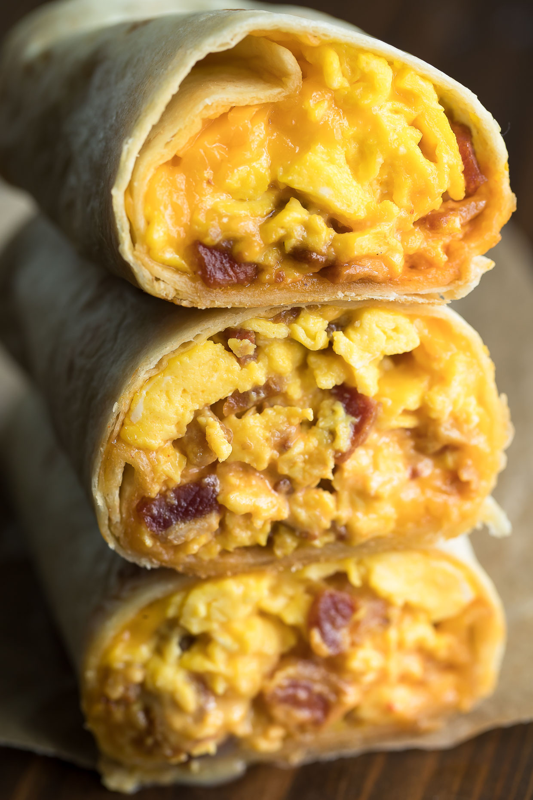

Recipe for Frozen Breakfast Burritos

What is a Frozen Breakfast Burrito?
The name says it all. This is just for ease and convenience in the morning.Ingredients.
Directions.
- In a large skillet over medium heat, cook bacon (in batches if necessary) until crispy.
Remove the bacon to a paper towel lined plate - leave to cool.
- In the same skillet - using leftover bacon grease (drain some if necessary) add the potatoes and season with salt and pepper. Once lightly browned add in peppers and onion. Cook until potatoes have browned and the peppers and onions have softened.
Remove from pan and place in bowl to cool.
- In the same saucepan, cook sausage until browned and cooked through.
Remove to a paper towel lined bowl.
- Reduce heat to medium/low and pour beaten eggs into the skillet. Fold and stir eggs occasionally until cooked but still soft and moist. Remove from pan.
- While cooked ingredients are cooling slightly, gather flour tortillas, shredded cheese and sliced green onions (optional) and set them out on your table/workspace.
- To assemble the burritos, lay out a tortilla and start with a base of eggs followed by desired toppings and finish with cheese.
- To wrap, fold in both sides and then fold the bottom up and over all the ingredients. Roll up tightly.
- NOTE: If you find the tortillas are tearing, heat them up - a few at a time - for 20 seconds in the microwave before assembling.
- Wrap up in parchment paper. Place the parchment-wrapped burritos in a 1 gallon freezer bag and place in the freezer to store for up to one month.
- To Reheat: Remove the frozen burrito from the freezer. Unwrap from parchment paper and wrap the frozen burrito up in a damp paper towel. Place on a microwave safe plate and microwave for 3 minutes.
- Remove from microwave and rest for one minute before unwrapping. Remove the paper towel, serve with hot sauce, saracha, salsa, or sour cream!
- Enjoy